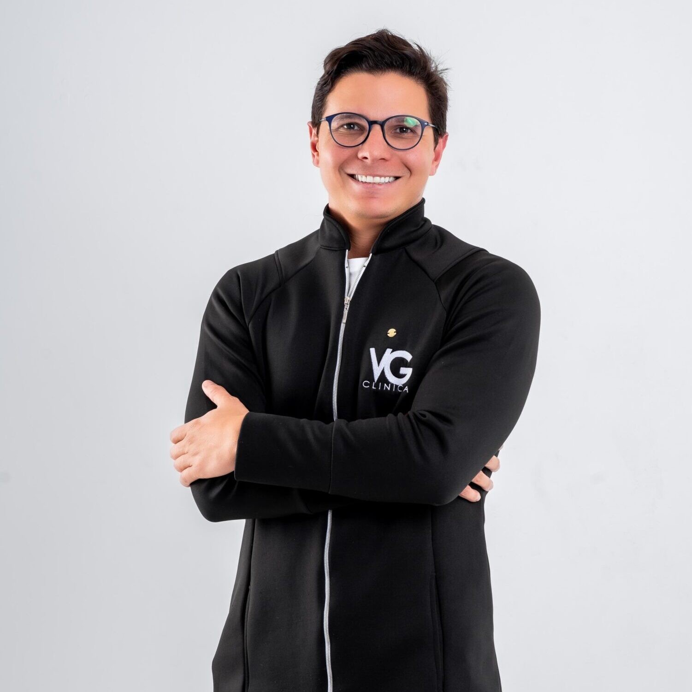
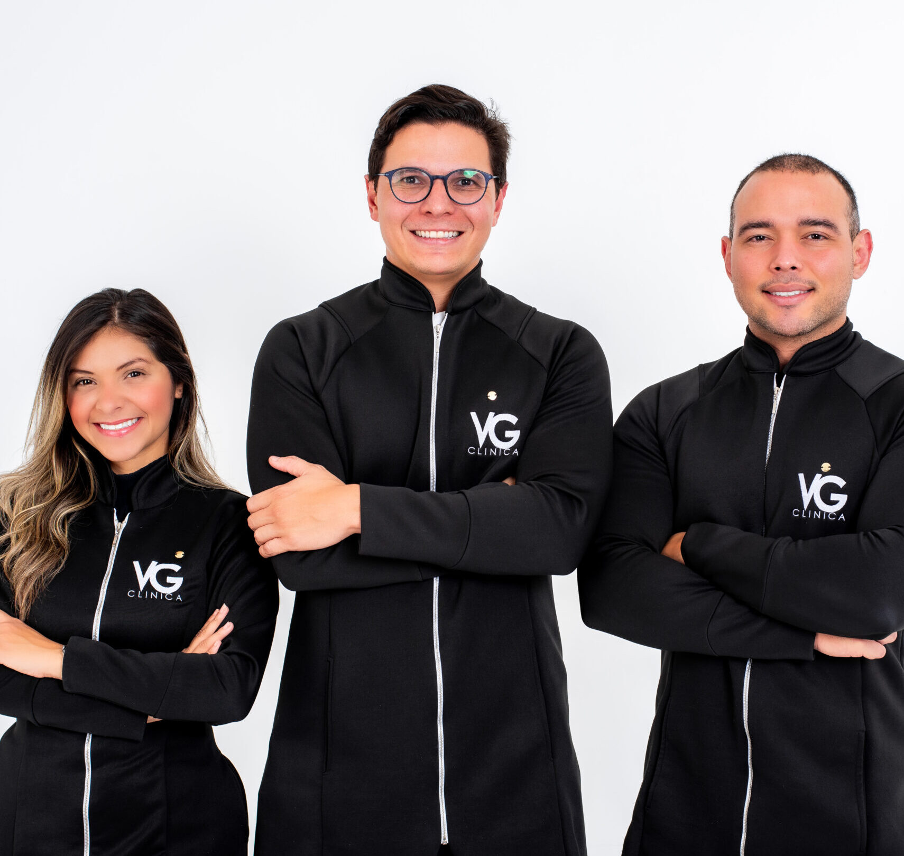

Consulta com Nutrólogo Dr. Victor
Avaliação médica para entender histórico, sintomas, exames, metabolismo e objetivos.
Oferta presencial em Fortaleza
Um protocolo completo para avaliar seu corpo, entender seus exames e iniciar um plano personalizado com acompanhamento profissional.
Vagas limitadas conforme disponibilidade da agenda da equipe.

Para quem é
O Protocolo VG foi pensado para homens e mulheres que desejam emagrecer, melhorar a disposição e construir um plano possível, com avaliação presencial e acompanhamento de uma equipe multidisciplinar.
O que está incluso
Avaliação médica para entender histórico, sintomas, exames, metabolismo e objetivos.
Orientação nutricional alinhada à sua rotina, preferências, necessidades e metas.
Ponto de partida para acompanhar composição corporal e indicadores além da balança.
Revisão da evolução, ajustes de conduta e próximos passos dentro do protocolo.
A reposição de vitaminas e nutrientes pode ser indicada após avaliação profissional e análise dos exames. A conduta é individualizada.
Diferencial
Dietas genéricas, foco apenas no peso, pouca clareza sobre exames e decisões baseadas em tentativa e erro.
Avaliação médica, nutricional e física integradas, com retorno em até 45 dias para revisar evolução e ajustar a estratégia.

Especialista em Nutrologia
CRM: 17973Nutricionista Esportiva e Clínica
CRN: 14077Nutricionista Esportiva e Clínica
CRN: 29556Dermatologia e Estética
COREN: 788666Condição limitada por agenda
Consulta com nutrólogo, consulta com nutricionista, avaliação física, retorno em até 45 dias e bônus de soroterapia quando houver indicação clínica.
Contato
Preencha seus dados e a equipe VG Clínica entra em contato para verificar disponibilidade de agenda e orientar os próximos passos.
FAQ
Para homens e mulheres que desejam emagrecer com acompanhamento profissional, melhorar hábitos, entender melhor seus exames e iniciar uma estratégia personalizada de saúde e bem-estar.
Consulta com Nutrólogo Dr. Victor, consulta com nutricionista, avaliação física e retorno em até 45 dias.
Sim. O retorno em até 45 dias faz parte da promoção, desde que realizado dentro do prazo informado pela clínica.
Não. Ela é um bônus condicionado à indicação profissional após avaliação e análise dos exames.
Não. Caso o médico solicite exames, eles serão orientados durante a consulta e realizados à parte.
Sim. A oferta é para atendimento presencial na VG Clínica, em Fortaleza.
O protocolo completo está disponível por R$ 697 à vista ou até 4x no cartão de crédito.
Sim. As vagas dependem da disponibilidade da agenda dos profissionais envolvidos, para garantir atendimento individualizado.
Agendamento
Protocolo presencial em Fortaleza por R$ 697 à vista ou até 4x no cartão.